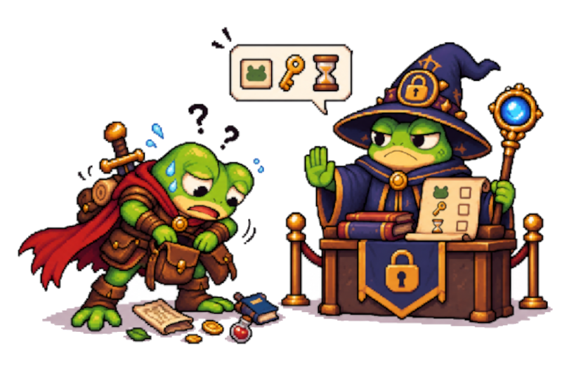

🐸 Alto lá, aventureiro!
O fiscal de tokens não te deixa passar!

A tua sessão expirou!
Nem uma espada lendária te safa desta. Precisamos de renovar a tua sessão.
O fiscal de tokens não te deixa passar!

Nem uma espada lendária te safa desta. Precisamos de renovar a tua sessão.